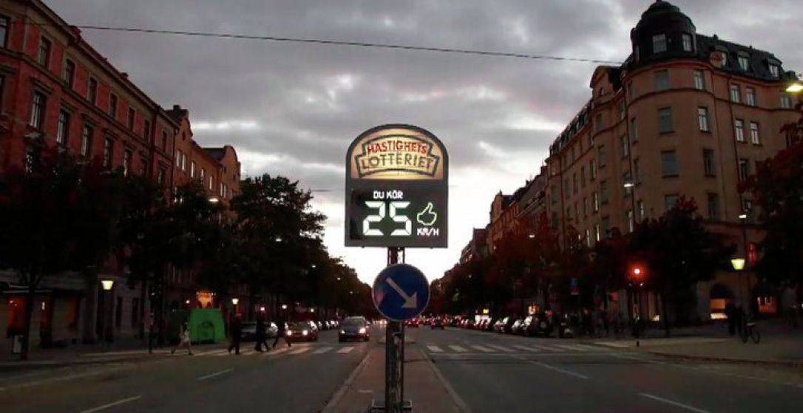

Het hoorcollege playful interactions werd gegeven door Danica Mast, er werden veel voorbeelden laten zien van playful interactions en op het einde van het college speelde we met de hele collegezaal Public Pong en Cooperative Tetris. Na het college heb ik het huiswerk gemaakt, ben verder op onderzoek uitgegaan en heb ik gekeken hoe playful interactions invloed hebben op mijn leven en hierop gereflecteerd.
Assignment
MOVEYOURBRAIN Assignment A: New Playful Interaction Concept Om studenten en docenten gedurende de schoolweken fit en geconcentreerd te houden, is het belangrijk dat iedereen genoeg lichaamsbeweging krijgt. Even sporten na school kost vaak te veel tijd in de tentamenweken en hardlopen als het weer eens regent? Nee bedankt! Door meer actief te zijn in school, mis je geen lichamelijke beweging. Iedere student en docent kan meedoen met MOVEYOURBRAIN. Het concept om studenten en docenten meer te laten bewegen gaat als volgt: ‘ Het vastleggen van hoe vaak jij de trap neemt zorgt voor een wekelijkse scoren, maak zelf een team aan en klim naar de top van actiefste klas of projectgroep’ En die vervelende brug tussen het ovaal en slinger? die pak jij nu voortaan want die wordt verbouwd tot heus gymbrigde, met ingebouwde camera’s zijn jouw bewegingen te volgen, steek jij deze brug over met lunges, of maak jij gebruik van de pullupbars, dan veranderen de muren van de brug in een bijpassend thema en haal je meer punten op voor je team. Naast de klok in het ovaal zal de wekelijkse top 3 score te zien zijn de 3 beste teams en 3 actiefste singleplayers. De input technology bestaan voornamelijk uit: computervison, het vastleggen van de bewegingen op de brug, en sensoren zorgen voor het vastleggen van het nemen van de trap. De out technology bestaan voornamelijk uit: zicht: projection ( op de brug) displays: het scorebord. en geluid bij het nemen van de trap. MoveYourBrain is single player maar ook multiplayer door het samenstellen van een team. MOVE YOUR BRAIN zorgt voor meer beweging zodat je hersenen onder andere tentamenstof beter kan onthouden, en je meer concentratie geeft zoals Hoogleraar neuropsychologie Erik Scherder uitlegt in dit filmpje op youtube
Research
 Speedcamera Lottery: De snelheidscamera loterij in Zweden maakt niet alleen foto’s van snelheidsovertreders, maar deze camera maakt ook foto’s van bestuurders die zich wel aan de snelheid houden. Om het gedrag van de bestuurders te belonen, krijgen de bestuurders een kaart gestuurd met daarop de foto, een felicitatie en een uitnodiging om mee te doen aan de loterij waarmee de bestuurder het geld kunnen winnen die overtreders moesten betalen aan boete van de overtreding. De speedcamera lottery geeft mensen een zetje in de goede richting (nudding) door goed gedrag te positief belonen. Het geeft ook duidelijk aan bestuurders aan of zij te hard rijden of niet. De feedback die het scherm langs de weg geeft, benadrukt nogmaals de bestuurders hun rijgedrag met een duimpje omlaag of omhoog en met rode of groene cijfers. Ik vind de speedcamera lottery erg interessant omdat de focus ligt op het belonen van gedrag in plaats van straffen. Ik ben van mening dat het ook belangrijker is om mensen te belonen en ze een zetje in de goede richting te geven om hun gedrag aan te passen dan mensen te straffen en de focus te leggen of wat ze fout doen.
Reflection
Het onderwerp playful interactions spreekt mij erg aan omdat ik het erg leuk vind om anderen te motiveren en graag de wereld zou willen verbeteren. Playful interactions die zich richten waarbij ze mensen ‘nudgen’ om hun afval om te ruimen vind ik echt hele inspirerende ontwikkelingen. Tegenwoordig horen we al genoeg negatieve verhalen over plastic, ik vind het daarom zo tof om dit op een positieve manier te benaderen. Door saaie dingen leuk te maken en hiermee de wereld verbeteren, dit klinkt voor mij als muziek in mijn oren.